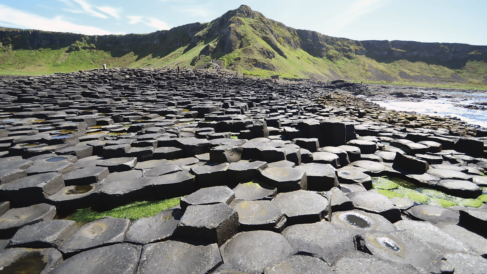
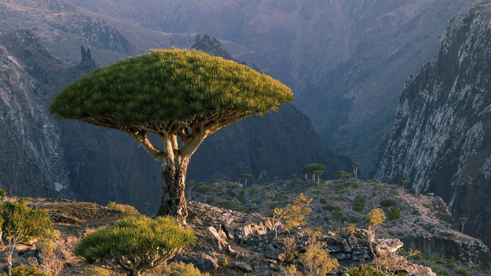

ჰილიერის ტბა, დასავლეთ ავსტრალია
- აღმოაჩინეს 1802 წელს
- აღმოაჩინა მეთიუ ფლაინდერსმა
- დაცული ტერიტორიის სტატუსი 2012 წელს მიენიჭა
- 2002 წლიდან სუბრეგიონალური მნიშვნელობის ჭარბტენიან ადგილს წარმოადგენს
ფლაის გეიზერი, ნევადა, აშშ
- 1916 წელს წყაროს მოსაპოვებლად ამ ადგილებში ჭაბურღილი ჩადგეს
- განლაგებულია ზღვის დონიდან 1223 მ სიმაღლეზე
- ამოფრქვევის სიმაღლე უდრის 1,5 მ-ს
- გეიზერის კედლები დღესაც განიცდის ზრდას
გიგანტების გზა, ჩრდილოეთ ირლანდია

- 1987 წელს კი ეროვნულ ბუნებრივ ნაკრძალად გამოცხადდა
- ვულკანური სვეტები პალეოგენის პერიოდში წარმოიქმნა
- მდებარეობს ჩრდილოეთ ირლანდიის ჩრდილო-აღმოსავლეთ სანაპიროზე
- უმაღლესი სვეტები 12 მეტრია, ხოლო კლდეების გაქვავებული ლავის სისქე 28 მ
სოკოტრა, იემენი

- უმთავრესად აგებულია კრისტალური ქანებით
- სიმაღლე - 1503 მეტრამდე (კუნძულ სოკოტრაზე)
- აშენებენ ფინიკის პალმებს, რქოსან საქონელს
- 2008 წელს შეიტანეს იუნესკოს მსოფლიო მემკვიდრეობის ძეგლების სიაში

ჰილიერის ტბის სიგრძე დაახლოებით 600 მეტრია, ხოლო სიგანე – 250 მ. იგი გარშემორტყმულია ქვიშიანი სანაპიროებით და ევკალიპტის ტყით, რომელიც მას მიდლ-აილენდისგან გამოყოფს.

მცირე ზომის გეოთერმული გეიზერი აშშ-ის ნევადის შტატის ჩრდილო-დასავლეთ ნაწილში. განლაგებულია ზღვის დონიდან 1223 მ სიმაღლეზე.
ტერიტორია, რომელიც მოიცავს უძველესი ვულკანური ამოფრქვევის შედეგად წარმოშობილ დაახლოებით 40 000 ბაზალტის სვეტს. მდებარეობს ჩრდილოეთ ირლანდიის ჩრდილო-აღმოსავლეთ სანაპიროზე, ქალაქ ბუშმილსიდან 4,8 კმ-ის მოშორებით.
კუნძულთა ჯგუფი ინდოეთის ოკეანეში (უდიდესი კუნძული - კ. სოკოტრა), იემენის რესპუბლიკის შემადგენლობაში. მდებარეობს გვარდაფუის კონცხის აღმოსავლეთით (აფრიკა).